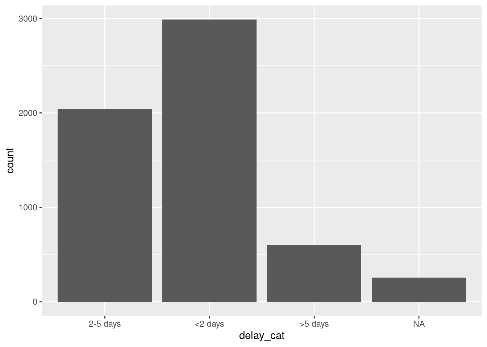
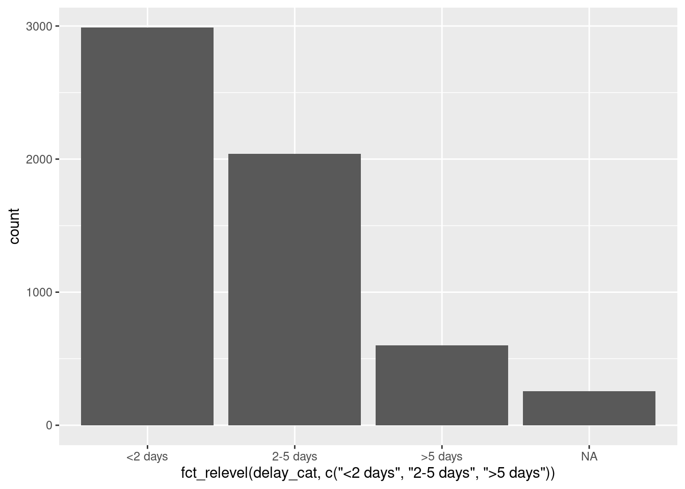
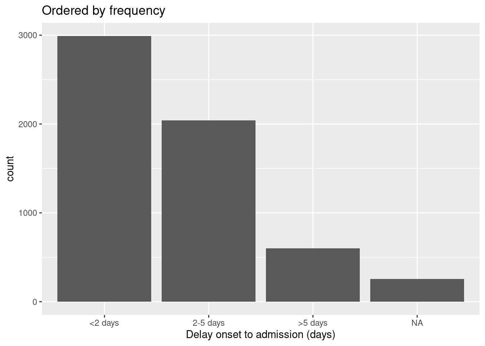
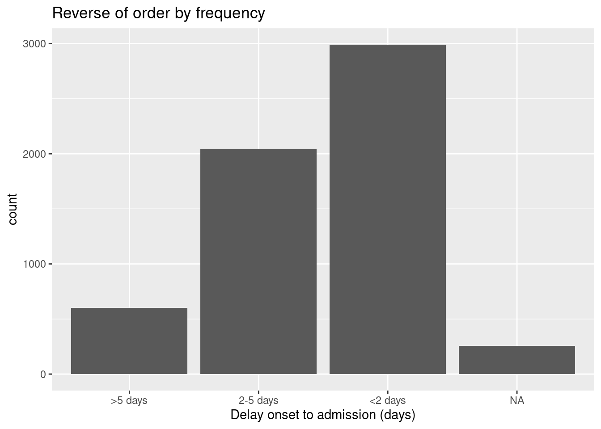

11 因子（ファクタ）型データ

R では、因子型（factor）は、固定の許容値でカテゴリを順序付けすることができるデータ型です。
一般的に、列を文字型（character）または数字型（numeric）から因子型に変換し、値に固有の順序（「レベル」と呼ばれる）を設定すると、プロットやテーブルにアルファベット以外の形式で表示できるようなります。因子型のもう一つの一般的な使用法としては、プロットの凡例を標準化し、特定の値がデータに一時的に存在しない場合にも変動しないようにすることができます。
本章では、forcats（“For categorical variables” の略）パッケージの関数と、R の基本パッケージ base の使い方を説明します。また、lubridate や aweek パッケージを使用し、疫学週に関する特殊な因子型の例についても触れます。
forcats の関数一覧は、オンラインで こちら からご覧ください。以下に、代表的なものをいくつか紹介します。
11.1 準備
パッケージの読み込み
以下のコードを実行すると、分析に必要なパッケージが読み込まれます。このハンドブックでは、パッケージを読み込むために、pacman パッケージの p_load() を主に使用しています。p_load() は、必要に応じてパッケージをインストールし、現在の R セッションで使用するためにパッケージを読み込む関数です。また、すでにインストールされたパッケージは、R の基本パッケージである base の library() を使用して読み込むこともできます。R のパッケージについては、R の基礎 の章を参照してください。
pacman::p_load(
rio, # インポート・エクスポート
here, # ファイルパス
lubridate, # 日付
forcats, # 因子型データ
aweek, # 自動的な因子レベルを持つエピウィークの作成
janitor, # 表
tidyverse # データ管理・可視化
)データのインポート
エボラ出血熱の流行をシミュレートしたデータセットをインポートします。お手元の環境でこの章の内容を実行したい方は、こちらをクリックして「前処理された」ラインリスト（linelist）をダウンロードしてください（.rds 形式で取得できます）。 データは rio パッケージの import() を利用してインポートしましょう（import() は、.xlsx、.csv、.rdsなど、様々な形式のファイルを扱うことができます）。インポートの詳細については、データのインポート・エクスポート の章を参照してください。
# データセットをインポートする
linelist <- import("linelist_cleaned.rds")新しいカテゴリ変数
このセクションでは、一般的によく行われる新しいカテゴリ変数の作成を例に説明します。
数字型の列を因子型に変換した場合、その列の数値計算はできなくなることに注意してください。
列の作成
既存の days_onset_hosp （症状発現から入院までの日数）列を用いて、各行を複数カテゴリのいずれかに分類し、新しく delay_cat 列を作成します。dplyr の case_when() を使い、左側には各行に適用する論理基準を書き、右側には新しい列 delay_cat の値として返される値を書きます。case_when() については、データクリーニングと主要関数 の章で詳しく説明しています。
初期値の順序
case_when() で作成されたように、新しい列 delay_cat は文字型であり、まだ因子型ではありません。したがって、度数分布表では、デフォルトの英数字の順序で値が表示されます（直感的ではなく、あまり意味のない順序です）。
table(linelist$delay_cat, useNA = "always")##
## <2 days >5 days 2-5 days <NA>
## 2990 602 2040 256同様に、棒グラフを作成する場合も、この順序で x 軸の値が表示されます（R で最も一般的なデータ視覚化のパッケージである ggplot2 の詳細については、ggplot の基礎 の章を参照ください）。
11.2 因子型への変換
文字型や数字型の列を因子型に変換するには、forcats パッケージに含まれている関数のいずれかを使用します（関数については 以下 で詳しく説明します）。このパッケージを使用するとデータを因子型に変換でき、任意の因子レベルの順序を指定することができます。例えば、 fct_relevel() を使用すると、レベルの順序を手動で指定できます。一方、as_factor() は単にデータを因子型に変換するのみで、レベルの設定などの機能はありません。
base R の関数である factor() は、列を因子型に変換し、levels = 引数に指定した文字ベクトルにより、因子レベルの順序を手動で指定することができます。
以下では、mutate() と fct_relevel() を使用して、列 delay_cat を文字型から因子型に変換します。列 delay_cat は、上記の 準備 セクションで作成されされたものです。
linelist <- linelist %>%
mutate(delay_cat = fct_relevel(delay_cat))ここで、この列の一意の「値」（重複のない形で取り出された値）は、因子の「レベル」と見なされます。レベルには順序があり、これは base R の levels() で確認するか、同じく base R の table() または janitor の tabyl() でカウントテーブル（列内の値の個数を集計した表）として表示することもできます。デフォルトでは、レベルの順序は先の例と同様に英数字になります。 NA は因子レベルではないことに注意してください。
levels(linelist$delay_cat)## [1] "<2 days" ">5 days" "2-5 days"fct_relevel() を使ってレベルの順序を手動で指定することもできます。以下のように、レベルの値を二重引用符で囲み、コンマで区切って順番に記載します。記載する綴り（つづり）は列内の値と正確に一致する必要があることに注意してください。データに存在しないレベルを作成する場合は、代わりに fct_expand() を使用してください。fct_expand() の詳細は、以下のセクション をご覧ください。
linelist <- linelist %>%
mutate(delay_cat = fct_relevel(delay_cat, "<2 days", "2-5 days", ">5 days"))上のコマンドを実行すると、指定したように、意味のある順序でレベルが並べられることが確認できます。
levels(linelist$delay_cat)## [1] "<2 days" "2-5 days" ">5 days"これで、プロットの順序もより直感的に理解できるようになりました。
11.3 レベルの追加または削除
レベルの追加
因子にレベルを追加する必要がある場合、 fct_expand() で実行することができます。列名の後に新しいレベル（コンマで区切る）を入力するだけです。値を表にすると、新しく作成されたレベルが確認でき、新しいレベルに含まれる値の個数（カウント）がゼロであることがわかります。base R の table() や、janitor の tabyl() で表を作成できます。
linelist %>%
mutate(delay_cat = fct_expand(delay_cat, "Not admitted to hospital", "Transfer to other jurisdiction")) %>%
tabyl(delay_cat) # 表の表示## delay_cat n percent valid_percent
## <2 days 2990 0.50781250 0.5308949
## 2-5 days 2040 0.34646739 0.3622159
## >5 days 602 0.10224185 0.1068892
## Not admitted to hospital 0 0.00000000 0.0000000
## Transfer to other jurisdiction 0 0.00000000 0.0000000
## <NA> 256 0.04347826 NA注：forcats 関数は、欠損値（NA）を簡単にレベルとして追加するための特別な関数です。詳しくは、以下の 欠損値 に関するセクションを参照してください。
レベルの削除
fct_drop() を使用すると、「使用されていない」レベル（カウントがゼロのレベル）がレベルのセットから削除されます。上の例で追加したレベル（“Not addmitted to hospital”）はレベルとして存在しますが、実際にその値を持つ行はありません。したがって、因子型の列に fct_drop() を適用すると、このような使用されていないレベルは削除されます。
## delay_cat n percent valid_percent
## <2 days 2990 0.50781250 0.5308949
## 2-5 days 2040 0.34646739 0.3622159
## >5 days 602 0.10224185 0.1068892
## <NA> 256 0.04347826 NA11.4 レベルの順序の調整
forcats パッケージには、因子型のレベルの順序を簡単に調整する便利な関数があります（列が因子型として定義された後に使用してください）。
forcats パッケージに含まれる関数は、次の 2 つの状況で因子型の列に適用できます。
- 通常通り、データフレームの列に対して適用する（変更内容がその後のデータ利用に適用されるようにする）
- プロット内で適用し、変更内容がプロット内でのみ適用されるようにする
手動で調整
fct_relevel() は、因子レベルを手動で順序付けるために使用されます。因子型ではない列で使用された場合、その列は最初に因子型に変換されます。
まず、括弧の中に対象の因子型の列名を記入し、次に以下のどちらかを記入します。
- すべてのレベルを希望する順序で文字ベクトル
c()で記入する、または
- 1 つのレベルを記入し、
after =引数で希望の配置を指定する
以下に、すでに因子型である delay_cat 列に含まれる因子のレベルを希望する順序で再定義する例を示します。
# レベルの順序を再定義する
linelist <- linelist %>%
mutate(delay_cat = fct_relevel(delay_cat, c("<2 days", "2-5 days", ">5 days")))1 つのレベルのみを調整する場合は、それを fct_relevel() にて単独で指定し、after = 引数に番号を指定し、既存の順序のどこに配置するかを指定します。例えば、以下のコマンドでは、“<2 days” を 2 番目の位置に移動させます。
# レベルの順序を再定義する
linelist %>%
mutate(delay_cat = fct_relevel(delay_cat, "<2 days", after = 1)) %>%
tabyl(delay_cat)プロット内で調整
forcats コマンドを使用して、データフレーム内、またはプロット内でのみレベルの順序を調整することが可能です。設定できます。ggplot() のコマンド内で列名を「指定する」コマンドを使用することにより、レベルの順序の反転や調整などをプロット内でのみ適用させることができます。
以下に、 ggplot() で 2 つのプロットを作成します（プロットの作成についての詳細は、ggplot の基礎 の章を参照ください）。最初の例では、 delay_cat の列がプロットの x 軸にプロットされ、linelist データセットにあるデフォルトの順序でレベルが表示されます。二つ目の例では、fct_relevel() の内で delay_cat の列を指定してプロット内で順序を変更しています。
# 英数字のデフォルトの順序（ggplot 内での調整なし）
ggplot(data = linelist)+
geom_bar(mapping = aes(x = delay_cat))
# ggplot 内で調整された因子レベルの順序
ggplot(data = linelist)+
geom_bar(mapping = aes(x = fct_relevel(delay_cat, c("<2 days", "2-5 days", ">5 days"))))
注釈：二つ目の例では、デフォルトの x 軸のタイトルが非常に複雑になっていることに注意してください。軸のタイトルは、ggplot2 の labs() 引数で変更することができます。
反転
レベルの順番を逆にしたい場合は、因子を fct_rev() で囲むだけです。
プロットの凡例のみを反転し、実際の因子レベルは反転させたくない場合は、guides() を使用して反転できます（詳しくは、ggplot の基礎 の章を参照ください）。
頻度による順序付け
列内の値の頻度で並べ替える場合は、fct_infreq() を使用します。欠損値（NA）は、“Missing” などの名付けられたレベルに変換されない限り、自動的に最後に含まれます（欠損値の変換については、本章の このセクション を参照ください）。fct_infreq() を使用したコマンドをさらに fct_rev() で囲むと、順序を反転することができ、頻度が少ない方から表示されます。
以下に示すように、この関数は ggplot() 内で使用できます。
# 頻度順に並べる
ggplot(data = linelist, aes(x = fct_infreq(delay_cat)))+
geom_bar()+
labs(x = "Delay onset to admission (days)",
title = "Ordered by frequency")
# 頻度順を反転させる
ggplot(data = linelist, aes(x = fct_rev(fct_infreq(delay_cat))))+
geom_bar()+
labs(x = "Delay onset to admission (days)",
title = "Reverse of order by frequency")
出現順序による順序付け
fct_inorder() を使用すると、データ内で最初の行からの出現順と一致するようにレベルの順序を設定することができます。fct_inorder() は、arrange() を用いてデータフレーム内のデータを並び替え、その並び替えられた順序を因子の順序とする場合に有効です。
別の列の要約統計による順序付け
fct_reorder() を使用して、列のレベルを他の列の要約統計量で並べ替えることができます。視覚的にも、プロット上でバーやポイントが安定して上昇または下降するような美しいプロットになります。
以下の例では、x 軸は delay_cat、y 軸は数値列 ct_blood（サイクル閾値）です。ボックスプロットでは、 delay_cat グループごとの CT 値の分布を示しています。グループの CT値 中央値で昇順にボックスプロットを並べ替えます。
以下の最初の例では、デフォルトの順序である英数字での順序が使用され、ボックスプロットが乱雑に表示されており、特定の順序で表示されていないことがわかります。二つ目の例では、fct_reorder()を使用して delay_cat 列（x 軸にプロットされている）が 1 番目に指定され、次に ct_blood 列が2番目の引数として指定され、最後に “median” が3番目の引数として指定されています（“max”、“mean”、“min” などが使用可能）。二つ目のコマンド実行後、delay_cat のレベルの順序は、各 delay_cat グループの CT 値の中央値によって昇順で並び替えられましたことがわかります（右側のプロット）。NA （欠損値）は名付けられたレベルに変換されない限り、最後に表示されることに注意してください。
# 元の因子レベル順で並べられた箱ひげ図
ggplot(data = linelist)+
geom_boxplot(
aes(x = delay_cat,
y = ct_blood,
fill = delay_cat))+
labs(x = "Delay onset to admission (days)",
title = "Ordered by original alpha-numeric levels")+
theme_classic()+
theme(legend.position = "none")
# CT 値の中央値順に並べられた箱ひげ図
ggplot(data = linelist)+
geom_boxplot(
aes(x = fct_reorder(delay_cat, ct_blood, "median"),
y = ct_blood,
fill = delay_cat))+
labs(x = "Delay onset to admission (days)",
title = "Ordered by median CT value in group")+
theme_classic()+
theme(legend.position = "none")この例では、グループ化やそれに伴う計算は、すべて ggplot コマンドの内部で行われているため、ggplot() 呼び出しの前にグループ化する必要がないことに注意してください。
「終了」値による順序付け
グループ化された折れ線グラフには、fct_reorder2() を使用してください。fct_reorder2() は、折れ線グラフの「最後」の値によって因子の順序を並び替えます（凡例も同様に並び替えられます）。 つまり、「最大の x 値に対応する y 値」によって因子の順序が変更され、並べ替えられます。
例えば、時間の経過に伴う病院ごとの症例数を示す線がある場合、 aes() の color = 引数にfct_reorder2() を適用し、凡例に現れる病院の順序が折れ線グラフの終端の順序と一致するようにすることができます。 詳しくは、こちら のドキュメントをご覧ください。
epidemic_data <- linelist %>% # linelistデータセットを使用する
filter(date_onset < as.Date("2014-09-21")) %>% # 見やすくするためのカットオフを指定
count( # 週ごとおよび病院ごとの症例数を取得する
epiweek = lubridate::floor_date(date_onset, "week"),
hospital
)
ggplot(data = epidemic_data)+ # プロットの作成を開始
geom_line( # 折れ線グラフを作る
aes(
x = epiweek, # x-軸 エピウィーク
y = n, # y-軸は1週間あたりの症例数
color = fct_reorder2(hospital, epiweek, n)))+ # 病院ごとにグループ化および色付けされたデータ、グラフ終端の高さによる因子順
labs(title = "Factor levels (and legend display) by line height at end of plot",
color = "Hospital") # 凡例のタイトルを変更する11.5 欠損値
因子型の列に欠損値（NA）がある場合は、fct_explicit_na() を使用して “Missing” などの名前付きのレベルに簡単に変換できます。NA 値は、デフォルトで因子のレベルオーダーの最後に “(Missing)” に変換されます。引数 na_level = でレベル名を調整することができます。
以下では、fct_explicit_na() を delay_cat 列に使用し、NA を “Missing delay”に変換した表を tabyl() で表示しています。
linelist %>%
mutate(delay_cat = fct_explicit_na(delay_cat, na_level = "Missing delay")) %>%
tabyl(delay_cat)## delay_cat n percent
## 2-5 days 2040 0.34646739
## <2 days 2990 0.50781250
## >5 days 602 0.10224185
## Missing delay 256 0.0434782611.6 レベルを結合する
手動で
fct_recode() を使い、レベルの表示を手動で調整することができます。これは、dplyr パッケージの recode()（データクリーニングと主要関数 の章を参照）に似ていますが、fct_recode() を使用すると新たな因子レベルを作成できます。因子型の列に recode() を使用する場合、新しく因子として作成された値は、あらかじめ許容レベルとして設定されていない限り、拒否されます。
fct_recode() は、複数のレベルに同じレベルを新たに割り当てることで、複数のレベルを一つのレベルに「結合」することもできます。複数のレベルを一つに結合する際は、元のデータが失われないように注意してください。元のデータを保持するために、既存の列を上書きするのではなく、新しい列を作成して結合の処理を行うことをおすすめします。
fct_recode() の構文は recode() とは異なります。recode() は OLD = NEW の形式で因子の名前を書きますが、fct_recode() は NEW = OLD で因子名を書きます。
delay_cat 列の現在のレベルは次のとおりです。
levels(linelist$delay_cat)## [1] "<2 days" "2-5 days" ">5 days"以下では、構文 fct_recode(column, "new" = "old", "new" = "old", "new" = "old") を使用して新しいレベルを作成します。
linelist %>%
mutate(delay_cat = fct_recode(
delay_cat,
"Less than 2 days" = "<2 days",
"2 to 5 days" = "2-5 days",
"More than 5 days" = ">5 days")) %>%
tabyl(delay_cat)## delay_cat n percent valid_percent
## Less than 2 days 2990 0.50781250 0.5308949
## 2 to 5 days 2040 0.34646739 0.3622159
## More than 5 days 602 0.10224185 0.1068892
## <NA> 256 0.04347826 NA次に、fct_recode() を使用して、複数のレベルを一つのレベルに結合します。新しいレベル “Less than 5 days” が作成された時にエラーが発生しないことに注意してください。
linelist %>%
mutate(delay_cat = fct_recode(
delay_cat,
"Less than 5 days" = "<2 days",
"Less than 5 days" = "2-5 days",
"More than 5 days" = ">5 days")) %>%
tabyl(delay_cat)## delay_cat n percent valid_percent
## Less than 5 days 5030 0.85427989 0.8931108
## More than 5 days 602 0.10224185 0.1068892
## <NA> 256 0.04347826 NA「その他」として縮小
fct_other() を使用して、因子レベルを「その他（“Other”）」と名付けられたレベルに手動で割り当てることができます。以下では、“Port Hospital” と “Central Hospital” を除く、hospital 列のすべての病院が「その他（“Other”）」にまとめられています。keep = または drop = のいずれかを使用してベクトルで指定できます。other_level = で「その他（“Other”）」レベルの表示を変更できます。
linelist %>%
mutate(hospital = fct_other( # レベルの
hospital,
keep = c("Port Hospital", "Central Hospital"), # これらを別々にキープする
other_level = "Other Hospital")) %>% # 他のすべては "Other Hospital" として
tabyl(hospital) # 表を表示## hospital n percent
## Central Hospital 454 0.07710598
## Port Hospital 1762 0.29925272
## Other Hospital 3672 0.62364130頻度が少ないレベルを結合する
fct_lump() を用いて、最も頻度の低い因子レベルを自動的に結合することができます。
多数の頻度が低いレベルを「その他（“Other”）」レベルに「ひとまとめ」にするには、以下のいずれかを行います。
-
n =に独立して保持したいグループの数を指定します。頻度の高い順に n 番目までレベルが保持され、それ以外のレベルは「その他（“Other”）」として一つに結合されます。
-
prop =に維持したいレベル以上の閾値頻度の割合を指定します。それ以外のレベルは「その他（“Other”）」として一つに結合されます。
other_level = で「その他（“Other”）」レベルの表示を変更できます。 以下では、最も頻度の高い 2 つの病院を除くすべての病院が “Other Hospital” に統合されています。
linelist %>%
mutate(hospital = fct_lump( # レベルの調整
hospital,
n = 2, # 上位2位のレベルをキープ
other_level = "Other Hospital")) %>% # 他は "Other Hospital"
tabyl(hospital) # 表を表示## hospital n percent
## Missing 1469 0.2494905
## Port Hospital 1762 0.2992527
## Other Hospital 2657 0.4512568, warn ## Show all levels
因子型を使用する利点の一つは、データセットに実際に存在する値に関係なく、プロットの凡例や表の表示形式を標準化することです。
例えば、多くの図表を作成する場合（複数の管轄区域に対応するためなど）、データの完成度や構成が異なっていても、凡例や表が同じように表示されるようにしたいものです。
プロット内で
ggplot() の図では、該当するscale_xxxx() に drop = FALSE の引数を追加するだけです。データ中に存在するかどうかにかかわらず、すべての因子レベルが表示されます。因子型の列のレベルが fill = を使用して表示されている場合、scale_fill_discrete() で drop = FALSE を指定すると、以下のようになります。因子レベルが x = （x 軸に対して） color = または size = で表示されている場合は、それに応じて scale_color_discrete() または scale_size_discrete() で指定します。
以下の例は、病院ごとの年齢カテゴリの積み上げ棒グラフです。scale_fill_discrete(drop = FALSE) を追加すると、データに存在しない場合でも、すべての年齢グループが凡例に表示されるようになります。
ggplot(data = linelist)+
geom_bar(mapping = aes(x = hospital, fill = age_cat)) +
scale_fill_discrete(drop = FALSE)+ # すべての年齢層を凡例に表示する
labs(
title = "All age groups will appear in legend, even if not present in data")
表で
janitor の tabyl() や base R の table() では、使用されていない因子レベルを含むすべてのレベルが表示されます。
dplyr の count() や summarise() を使って表を作成する場合は、引数 .drop = FALSE を追加し、使われていない因子レベルも含めてすべてのレベルのカウントを含めるようにします。
詳細については、記述統計表の作り方 の章、scale_discrete について説明した こちら のページ、または count() について説明した こちら のページを参照してください。また、接触者の追跡 の章では他の例を紹介しています。
11.7 疫学週
疫学週作成方法については、データのグループ化 の章で詳しく説明していますので、そちらをご覧ください。また、日付型データ の章では、疫学週の作成方法と書式を紹介していますので、あわせてご覧ください。
プロット内での疫学週
疫学週を作成してプロットに表示することが目的である場合は、データのグループ化 の章で説明されているように、lubridate パッケージの floor_date() を使用して簡単に行うことができます。その際作成される値は、YYYY-MM-DD 形式の日付型になります。floor_date() で作成された列をプロットで使用する場合は、日付が正しく順序付けられているため、因子レベルの調整や因子型への変換を気にする必要はありません。以下に表示されている、発症日の ggplot() ヒストグラムを参照してください。
floor_date() で作成された列をプロットする際は、scale_x_date() を使用して x 軸上の日付の表示形式を調整できます。詳細については、流行曲線（エピカーブ） の章を参照してください。
scale_x_date() の date_labels = 引数に表示したい形式を、“strptime” 形式で指定ください。日付型データ の章で詳しく説明されていますが、“strptime” 形式では “%” 記号を使用します。また、“％Y” を使用して 4 桁の年を表し、“％W” または “％U” を使用して週番号（それぞれ月曜日または日曜日の週）を表します。
linelist %>%
mutate(epiweek_date = floor_date(date_onset, "week")) %>% # 週の列を作成
ggplot()+ # ggplotを開始
geom_histogram(mapping = aes(x = epiweek_date))+ # 発症日のヒストグラム
scale_x_date(date_labels = "%Y-W%W") # 日付の表示をYYYY-WWwに調整
データ内のエピウィーク
ただし、表示形式の変更の目的がプロットではない場合は、次の 2 つの方法のいずれかを使うことができます。
- 表示形式を細かく調整するには、データフレーム内で lubridate で作成された疫学週の列（YYYY-MM-DD）を希望の表示形式（YYYY-WWw）に変換した後、因子型データに変換します。
まず、base R の format() を使用して、日付表示を YYYY-MM-DD から YYYY-Www 形式に変換します（詳しくは、日付型データ の章を参照ください）。表示形式の変換時に、データ型は文字型に変換されます。次に、factor() を使用して文字型から因子型に変換します。
linelist <- linelist %>%
mutate(epiweek_date = floor_date(date_onset, "week"), # 疫学週を作成する（YYYY-MM-DD）
epiweek_formatted = format(epiweek_date, "%Y-W%W"), # （YYYY-WWw）表示に変換
epiweek_formatted = factor(epiweek_formatted)) # 因子に変換
# レベルの表示
levels(linelist$epiweek_formatted)## [1] "2014-W13" "2014-W14" "2014-W15" "2014-W16" "2014-W17" "2014-W18"
## [7] "2014-W19" "2014-W20" "2014-W21" "2014-W22" "2014-W23" "2014-W24"
## [13] "2014-W25" "2014-W26" "2014-W27" "2014-W28" "2014-W29" "2014-W30"
## [19] "2014-W31" "2014-W32" "2014-W33" "2014-W34" "2014-W35" "2014-W36"
## [25] "2014-W37" "2014-W38" "2014-W39" "2014-W40" "2014-W41" "2014-W42"
## [31] "2014-W43" "2014-W44" "2014-W45" "2014-W46" "2014-W47" "2014-W48"
## [37] "2014-W49" "2014-W50" "2014-W51" "2015-W00" "2015-W01" "2015-W02"
## [43] "2015-W03" "2015-W04" "2015-W05" "2015-W06" "2015-W07" "2015-W08"
## [49] "2015-W09" "2015-W10" "2015-W11" "2015-W12" "2015-W13" "2015-W14"
## [55] "2015-W15" "2015-W16"警告：“Www-YYYY” や “%W-%Y” など、年より先に週を配置すると、デフォルトの英数字レベルの順序がおかしくなります（例えば、01-2015 は 35-2014 より前になる）。その場合は、順序を手動で調整する必要があり、非常に面倒な作業が必要になります。
-
デフォルトの表示を高速化するには、aweek パッケージに含まれる
date2week()を使用します。week_start =に任意の曜日を指定し、factor = TRUEに設定すると、アウトプットされる列は順序付けられた因子型になります。また、その週に症例がない場合でも、期間内の考えられるすべての週が因子レベルとして含まれます。
df <- linelist %>%
mutate(epiweek = date2week(date_onset, week_start = "Monday", factor = TRUE))
levels(df$epiweek)aweek パッケージの詳細は、日付型データ の章を参照してください。また、date2week() と逆の働きをする week2date() についても触れられています。